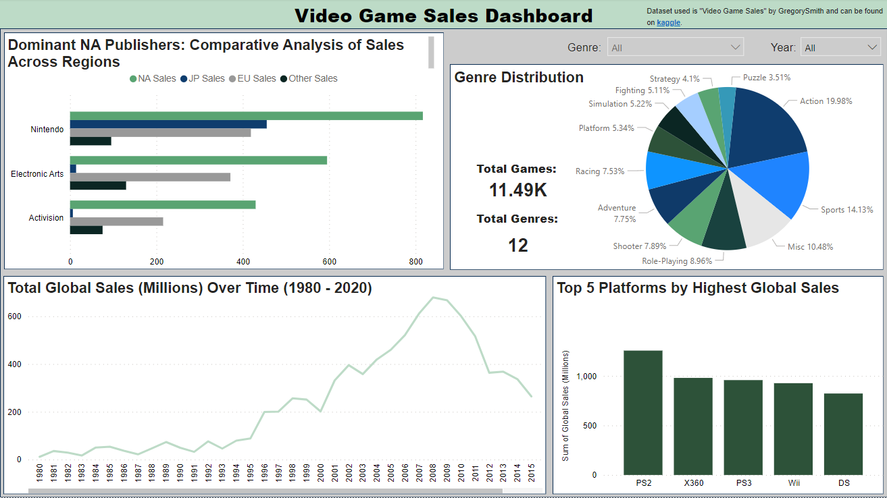

Video Game Sales Dashboard (Power BI)
Introduction:
This public data set found on Kaggle analyze sales data from more than 16,500 games. With the video game industry experiencing continuous growth, I aim to gather valuable insights to assist a video game company in understanding the most profitable games and genres.
Picture of Dashboard: 
Conclusions:
From the dashboard, we can isolate different genres to see total sales, what platforms have the greatest sales, and more.
- There are a total of 12 unique genres and 11,490 unique video game titles in this data set.
- Action games make up most of this data set (19.98%).
- Nintendo is a dominant publisher with the highest North America, Japan, and Europe sales.
- We can see from 2003 - 2008 that there was a steady increase in global sales and from 2008 - 2020, global sales decreased. With futher research, we can figure out why this was the trend.
- The Playstation 2 was the best selling platform with total global sales of $1,255,640,000.
These are some of the conclusions we can make from this data. Through this project, I learned more about how to utilize Power BI's interface to create interactive dashboards that can help us analyze data.